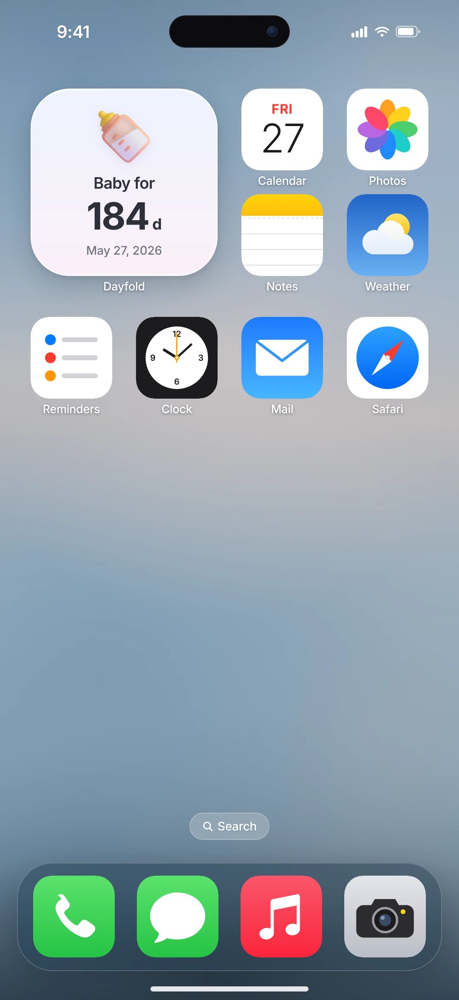

Track Days Since Your Baby Was Born on iPhone
Dayfold can keep a birth date on your iPhone as a days-since moment: you set the day your baby was born, and the app (and its widgets) show how many days have passed. It is a date-and-day-count widget, not a baby journal, and it is not verified to display “X weeks, Y months old.” Public screenshots and the App Store listing show elapsed days (for example “94 d” and “Graduation for 94 days”). You can still use it as a simple “days since baby was born” widget on the Lock Screen or Home Screen, optionally repeat the birthday every year, and set milestone reminders at 30, 100, 365 or 1,000 days.

Quick facts
| What you see | Elapsed days since the date you enter |
|---|---|
| Weeks / months display | Not verified — do not expect an automatic “8 weeks 3 days” or “4 months old” readout |
| Widgets | Small or medium Home Screen; Lock Screen |
| System | iPhone, iOS 17 or later |
| Birthday each year | Yearly repeat is supported for birthdays |
| Milestones | 30, 100, 365 or 1,000 days (on-the-day, 30- and 100-day reminders are free) |
| Not included | Feeding, sleep, diaper logs, growth charts, or a baby-only layout |
| Price | Free to download; four active moments free; Dayfold Pro is optional (monthly or one-time Lifetime) |
What Dayfold actually shows
If you are searching for “how many weeks old is my baby” or a “days since baby born widget,” you usually want a number you can glance at without opening an app. Dayfold can do the days part of that job.
Create a moment, give it a name you like (for example the baby’s name, or “Born”), and set the date to the birth date — a past date. Dayfold then counts up: official screenshots use a “for 94 d” layout for a past date, and the Lock Screen wording documented on our Christmas guide is “N days ago” once a date has passed. A birth date is the same mechanism.
What we cannot honestly promise: a dedicated baby-age format that switches to weeks, then months, then years. Nothing in the current App Store description (subtitle: “Count Up & Days Since”), the product page, or the shipping screenshots shows a weeks-and-months breakdown. If you need “how many weeks old,” you can read the day count and divide by seven yourself. Dayfold will not be described here as a weeks-old calculator.

How to add days since birth to your Lock Screen or Home Screen
- Download Dayfold and open it once, so iOS will list its widgets.
- Tap the + button. The Create a Moment screen opens.
- Enter a name and set Date to the birth date. Because the date is in the past, Dayfold counts the days since then rather than days remaining.
- Optional: turn on Primary if this should be the default widget (“Show first · Default widget”). Optional: set Reminders, or set Repeat if you want the birthday to return each year.
- Save the moment (and pick a card style if the next screen asks you to). The free styles are Emoji, Flip Calendar and Ticket.
- Lock Screen: touch and hold the Lock Screen, tap Customize, tap Add Widgets, choose Dayfold, and place the widget. On iOS 17 or later you can tap the widget and select this moment if it is not already the pinned one. (These are Apple’s Lock Screen widget steps.)
- Home Screen (optional): touch and hold the Home Screen, tap Edit, tap Add Widget, find Dayfold, and choose a small or medium widget. The small widget is the format shown in the hero example.
Open the app once after a restart if a widget shows a placeholder; iOS sometimes waits until the first unlock to refresh widgets.

Birthdays, 100 days, and the first year
Dayfold can repeat birthdays yearly, which is the right tool for the birthday itself rather than the running age in days. For early milestones, you can turn on reminders at 30, 100, 365 or 1,000 days. On-the-day, 30-day and 100-day reminders are free; advance reminders and the extra milestone options are part of Dayfold Pro.
That 100-day and 365-day pair maps cleanly onto “100 days old” and the first birthday, still as day-count milestones — not as a separate baby-tracker feature.
If you also want to count down to a later event (a trip, a family visit), create a second moment with a future date. The free plan allows four active moments.
What this is not
Dayfold does not log feeds, naps, or diapers, and it displays elapsed time in days rather than a combined weeks-and-months format. It is a calm date card and widget for days since a date you care about. If you need a medical or pediatric record, use a tool built for that. This page is not medical advice.
Free and optional Pro
Dayfold is free to download. No account is required, and moment content stays on your iPhone (cloud sync is not available). Four active moments and three card styles are free. Dayfold Pro, as a monthly plan or a one-time Lifetime purchase, unlocks unlimited moments, every card and widget style, advance reminders and additional milestones.
FAQ
Does Dayfold show my baby’s age in weeks and months?
No. Dayfold shows how many days have passed since the date you set. It is not verified to display a weeks-and-months age, such as “8 weeks old.” You can still use it as a days-since-birth widget.
Can I put days since birth on my iPhone Lock Screen?
Yes. Create a moment with the birth date, then add a Dayfold Lock Screen widget (touch and hold the Lock Screen, tap Customize, tap Add Widgets). Dayfold requires iOS 17 or later.
Will the birthday repeat every year?
Yes. Dayfold can repeat birthdays yearly, so you do not have to create a new moment each year.
Is this a baby tracker for feeding or sleep?
No. Dayfold is a countdown and days-since widget app. It does not log feeding, sleep or diapers.
Is Dayfold free?
Yes. Dayfold is free to download. You can keep four active moments and use three card styles without paying. Dayfold Pro is an optional monthly plan or one-time Lifetime purchase.